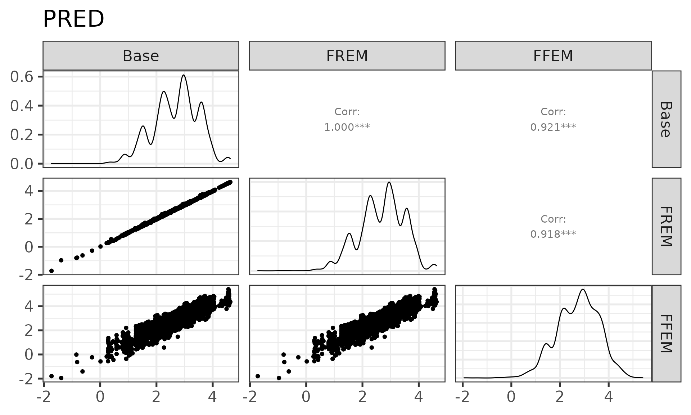
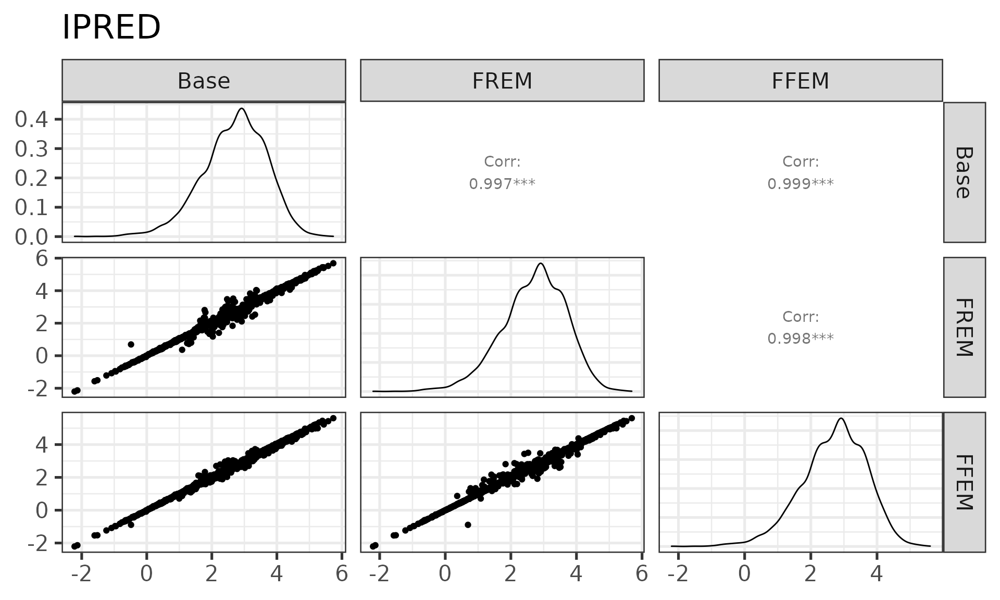
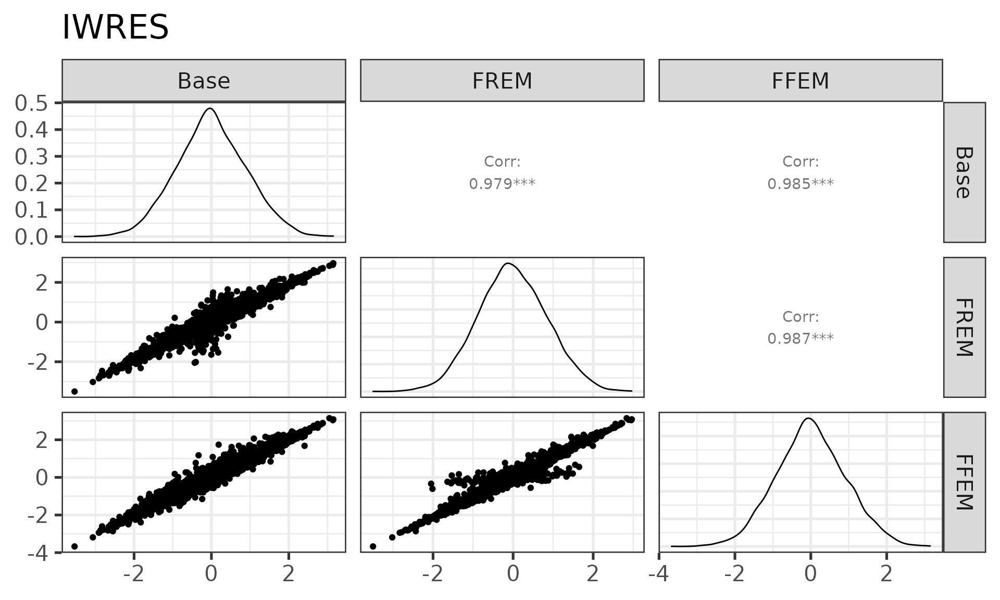
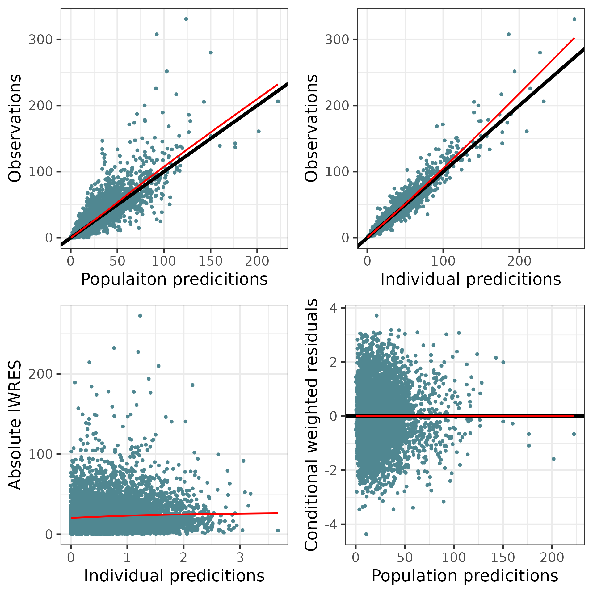
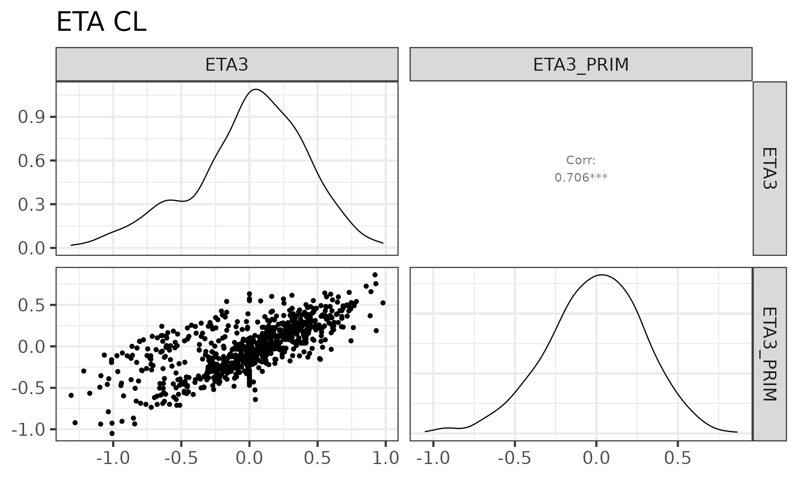
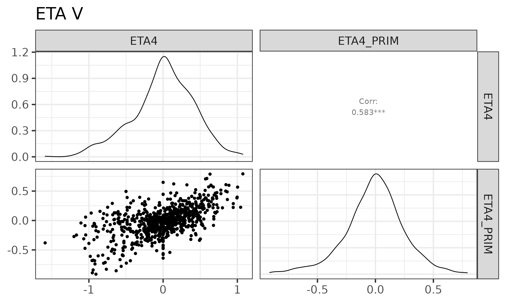
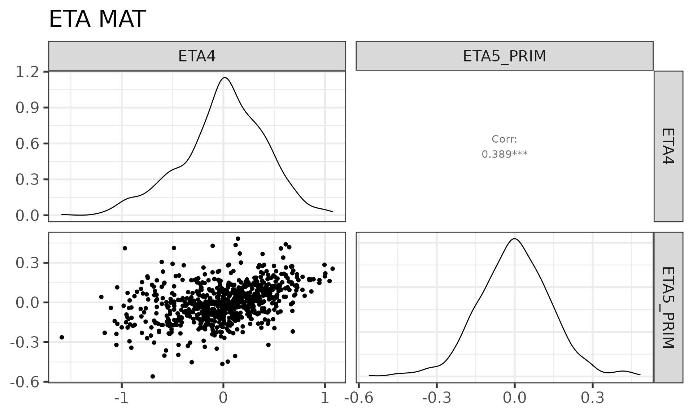
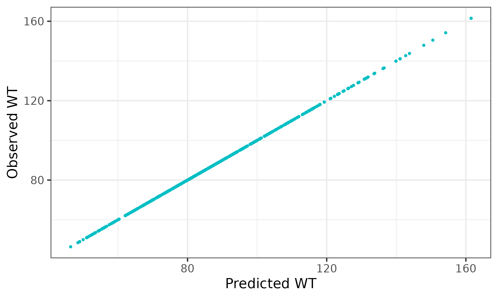
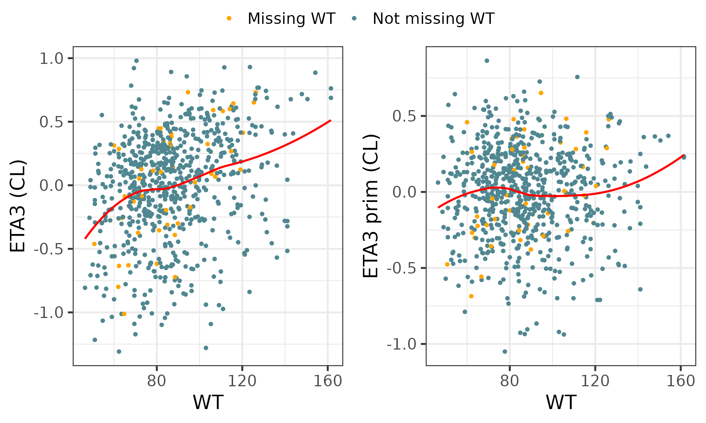
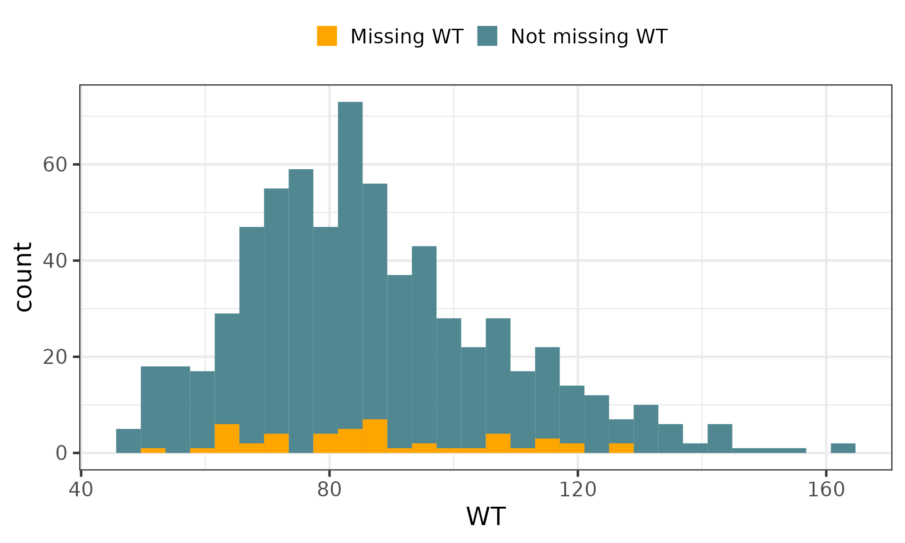

Generate standard diagnostics for a FREM model
Joakim Nyberg and Niclas Jonsson
standard_diagnostics.RmdIntroduction
Just like with any other model it is important to check that FREM models satisfy basic diagnostic tests, for example goodness-of-fit (GOF) plots of DV versus PRED and CWRES versus TIME. Unlike standard models, some of variables of interest are not directly available from the FREM model itself but will have to be derived based on an FFEM version of the model.
Create the FFEM model
Create the FFEM model for the set of covariates to include in the model to be evaluated.Consult the companion vignette on how to set up the FFEM model and generate the necessary output.
modDevDir <- system.file("extdata/SimNeb",package="PMXFrem")
dataFile <- system.file("extdata/SimNeb/DAT-2-MI-PMX-2-onlyTYPE2-new.csv",package="PMXFrem")
fremRun <- 31
baseRun <- 30
fremFiles <- getFileNames(fremRun,modDevDir=modDevDir)Comparison of standard diagnostiocs input from Base, FREM and FFEM model
xptabBase <- fread(paste0(modDevDir,"/xptabmax0",baseRun),data.table=FALSE,check.names = T) %>%
filter(BLQ==0,EVID==0) %>%
arrange(ID,TAD)
xptabFFEM <- fread(paste0(modDevDir,"/xptabmax0",fremRun),data.table=FALSE,check.names = T) %>%
filter(BLQ==0,EVID==0) %>%
arrange(ID,TAD)
xptabFREM <- fread(paste0(modDevDir,"/xptab",fremRun),data.table=FALSE,check.names = T) %>%
filter(BLQ==0,EVID==0,FREMTYPE==0) %>%
arrange(ID,TAD)
cwresData <- bind_cols(Base=xptabBase$CWRES, FREM=xptabFREM$CWRES, FFEM=xptabFFEM$CWRES)
iwresData <- bind_cols(Base=xptabBase$CIWRES,FREM=xptabFREM$CIWRES,FFEM=xptabFFEM$CIWRES)
predData <- bind_cols(Base=xptabBase$CPRED, FREM=xptabFREM$CPRED, FFEM=xptabFFEM$CPRED)
ipredData <- bind_cols(Base=xptabBase$CIPREDI,FREM=xptabFREM$CIPREDI,FFEM=xptabFFEM$CIPREDI)PRED
ggpairs(predData) + ggtitle("PRED")
The PREDs are the same between Base and FREM since the THETAs are the same and no covariates affect the typical individual parameters. FFEM is different from the others due to the covariates.
\[\begin{align*} \mathrm{PRED}_{Base} &= f(\theta_{base},\eta_i=0) \\ \mathrm{PRED}_{FREM} &= f(\theta_{base},\eta_i=0)\\ \mathrm{PRED}_{FFEM} &= f(\theta_{base},\color{red}{\theta_{cov}},\color{red}{X_{cov}},\eta_i=0) \end{align*}\](Differences between the models are marked with \(\color{red}{red}\).)
IPRED
ggpairs(ipredData) + ggtitle("IPRED")
The IPREDs are different between Base and FREM due to eta estimated with different Omegas and is different for the FFEM model due to the covariates and OMEGA prim.
\[\begin{align*} \mathrm{IPRED}_{Base} &= f(\theta_{base},\eta_i=\color{red}{\eta_{base}}) \\ \mathrm{IPRED}_{FREM} &= f(\theta_{base},\eta_i=\color{red}{\eta_{FREM}})\\ \mathrm{IPRED}_{FFEM} &= f(\theta_{base},\color{red}{\theta_{cov}},\color{red}{X_{cov}},\color{red}{\eta_i=\eta_{prim}}) \end{align*}\]where \(\eta\) is estmated by: \[ \color{red}{\eta_i} = \operatorname*{arg\,max}_\eta l_i + \log({pdf(\color{red}{\eta_i};\color{red}{\Omega)}}) \]
where \(l_i\) is the individual likelihood and \(pdf\) is the probability density function of a normal distribution with variance \(\color{red}{\Omega}\).
(Differences between the models are marked with \(\color{red}{red}\).)
CWRES
ggpairs(cwresData) + ggtitle("CWRES")The CWRES are not the same. This is due to differences in population variance as well as IPRED, eta and omega
\[\begin{align*} \mathrm{CWRES}_i &= \frac{y_i - \color{red}{E[u_i]}}{\color{red}{Var[y_i]^2}}\\ \color{red}{E[y_i]} &= \color{red}{IPRED_i} - \color{red}{\eta_i\frac{ \delta IPRED_i^T}{\delta\eta_i}}\\ \color{red}{Var[y_i]} &= \color{red}{\frac{\delta IPRED_i}{\delta \eta_i}\Omega\frac{\delta IPRED_i^T}{\delta \eta_i}} + \Sigma^* \end{align*}\]\(^*\) The residual error model can also differ. See below.
(Differences between the models are marked with \(\color{red}{red}\).)
IWRES
ggpairs(iwresData) + ggtitle("IWRES")
The IWRES are not the same. Mainly due to difference is IPRED but also residual error model if it depends on IPRED . \[\begin{align*} \mathrm{IWRES}_i = \frac{y_i - \color{red}{\color{red}{\mathrm{IPRED}_i}}}{\color{red}{R_i^2}}\\ \color{red}{R_i} = diag \left( \color{red}{\frac{\delta res}{\delta \varepsilon_i}} \Sigma \color{red}{\frac{\delta res^T}{\delta \varepsilon_i}} \right) \end{align*}\](Differences between the models are marked with \(\color{red}{red}\).)
Creating basic GOF plots
## DV vs PRED
p1 <- xptabFFEM %>%
ggplot(aes(exp(CPRED),exp(DV))) +
geom_point(color="#508791") +
geom_abline(slope = 1,intercept = 0,size=2) +
geom_smooth(se = FALSE,color="red") +
xlab("Populaiton predicitions") +
ylab("Observations")
## DV vs IPRED
p2 <-xptabFFEM %>%
ggplot(aes(exp(CIPREDI),exp(DV))) +
geom_point(color="#508791") +
geom_abline(slope = 1,intercept = 0,size=2) +
geom_smooth(se = FALSE,color="red") +
xlab("Individual predicitions") +
ylab("Observations")
## abs(IWRES) vs IPRED
p3 <- xptabFFEM %>%
ggplot(aes(abs(CIWRES),exp(CIPREDI))) +
geom_point(color="#508791") +
geom_smooth(se = FALSE,color="red") +
xlab("Individual predicitions") +
ylab("Absolute IWRES")
## CWRES vs IPRED
p4 <- xptabFFEM %>%
ggplot(aes(exp(CPRED),CWRES)) +
geom_point(color="#508791") +
geom_abline(slope = 0,intercept = 0,size=2) +
geom_smooth(se = FALSE,color="red") +
xlab("Population predicitions") +
ylab("Conditional weighted residuals")
ggarrange(p1,p2,p3,p4,ncol=2,nrow=2)
#> `geom_smooth()` using method = 'gam' and formula 'y ~ s(x, bs = "cs")'
#> `geom_smooth()` using method = 'gam' and formula 'y ~ s(x, bs = "cs")'
#> `geom_smooth()` using method = 'gam' and formula 'y ~ s(x, bs = "cs")'
#> `geom_smooth()` using method = 'gam' and formula 'y ~ s(x, bs = "cs")'
Creating ETA plots
Similarly to the standar diagnostics variables (e.g. CWRES) ETAs will also have to be adjusted to reflect the impact of covariates, i.e. the “ETA prims” needs to be computed. This is done by the calcEtas function. This function requires an “FFEM data object” from the createFFEMmodel function as input.
data <- fread(dataFile,data.table=FALSE,check.names = T) %>%
filter(BLQ!=1)
## Check with specified parameter names
FFEMdata <- createFFEMdata(runno = fremRun,
modDevDir = modDevDir,
parNames = c("CL","V","MAT"),
numNonFREMThetas = 7,
numSkipOm = 2,
dataFile = data,
newDataFile = NULL,
quiet = TRUE)Collect the ETAs and compute the ETA_proms
ind_params <- calcEtas(runno = fremRun,
modDevDir = modDevDir,
numSkipOm = 2,
numNonFREMThetas = 7,
FFEMData = FFEMdata) %>%
arrange(ID)
print(head(ind_params))
#> ID ETA1_PRIM ETA2_PRIM ETA3_PRIM ETA4_PRIM ETA5_PRIM ETA1
#> 1 1 0.355890 0.000265641 0.29839265 -0.16738472 -0.4525150 0.355890
#> 2 2 0.172514 0.000223009 -0.09115155 -0.01035833 0.2333414 0.172514
#> 3 3 0.197031 -0.001197820 -0.03890302 -0.12012065 -0.1972245 0.197031
#> 4 4 -0.318559 0.000221808 -0.26696247 0.21725668 0.2852994 -0.318559
#> 5 5 0.128488 0.001241110 -0.24828690 -0.13152842 -0.1702444 0.128488
#> 6 6 -0.244566 0.000729417 0.19374638 0.03682627 -0.4478100 -0.244566
#> ETA2 ETA3 ETA4 ETA5 WT HT LBWT
#> 1 0.000265641 0.1462660 -0.3117180 -0.543485 71.20000 180.6003 58.42542
#> 2 0.000223009 -0.2453740 -0.5942760 0.215847 56.00000 172.7003 48.14133
#> 3 -0.001197820 0.0360389 0.0334388 -0.220241 73.60000 168.0003 50.34672
#> 4 0.000221808 -0.7553180 0.0554221 0.108853 83.70003 170.2003 61.11420
#> 5 0.001241110 -0.3035630 -0.4598280 -0.268287 63.50000 185.4003 54.83455
#> 6 0.000729417 -0.1666270 0.0428249 -0.532617 97.00000 189.2003 73.05570
#> BSA AGE AST ALT BILI CRCL BMI SEX
#> 1 1.889940 39.00003 29.62327 25.00005 23.946010 95.3004 21.80003 0.999999
#> 2 1.639042 42.00003 27.99996 30.24826 9.344359 95.5004 18.80000 0.999994
#> 3 1.853286 25.00000 24.40934 19.00005 10.262002 124.6026 26.10003 1.999994
#> 4 1.989243 39.00003 29.99996 24.00004 25.656010 130.7004 28.90004 0.999994
#> 5 1.808417 25.00000 22.99996 18.00000 11.972990 104.7004 18.50000 1.000003
#> 6 2.257851 41.00003 63.81090 82.00000 32.498010 104.4004 27.10003 0.999999
#> RACEL_3 RACEL_2 NCIL_2 NCIL_1 GENO2 ETHNIC SMOK
#> 1 -3.0e-07 0.999994 -0.0000041 0.999997 1.999991 0.103375 -2.8e-06
#> 2 -4.0e-06 -0.000003 -0.0000017 0.000000 1.680606 0.852023 8.3e-06
#> 3 -4.9e-06 1.000008 0.0000003 0.000005 1.999995 -0.000002 5.7e-06
#> 4 -4.6e-06 0.000002 1.0000019 0.000005 1.780071 0.999996 -1.7e-06
#> 5 -2.6e-06 0.000001 -0.0000020 0.000005 1.999994 0.000002 -2.0e-07
#> 6 -4.3e-06 0.999990 0.9999849 -0.000005 2.065208 -0.000005 -2.5e-06
#> WT_MISSING HT_MISSING LBWT_MISSING BSA_MISSING AGE_MISSING AST_MISSING
#> 1 0 0 0 0 0 1
#> 2 0 0 0 0 0 0
#> 3 0 0 0 0 0 1
#> 4 0 0 0 0 0 0
#> 5 0 0 0 0 0 0
#> 6 0 0 0 0 0 1
#> ALT_MISSING BILI_MISSING CRCL_MISSING BMI_MISSING SEX_MISSING RACEL_3_MISSING
#> 1 0 0 0 0 0 0
#> 2 1 1 0 0 0 0
#> 3 0 0 1 0 0 0
#> 4 0 0 0 0 0 0
#> 5 0 0 0 0 0 0
#> 6 0 0 0 0 0 0
#> RACEL_2_MISSING NCIL_2_MISSING NCIL_1_MISSING GENO2_MISSING ETHNIC_MISSING
#> 1 0 0 0 0 1
#> 2 0 0 0 1 1
#> 3 0 0 0 0 0
#> 4 0 0 0 1 0
#> 5 0 0 0 0 0
#> 6 0 0 0 1 0
#> SMOK_MISSING
#> 1 0
#> 2 0
#> 3 0
#> 4 0
#> 5 0
#> 6 0Compare the ETAs and the ETA_prims



All predicted covariate values will be the same as the observed values, provided there are informative observations for the subject in question (i.e. not only dosing records in PK).
covariates <- data %>%
group_by(ID) %>%
mutate(haveObs = ifelse(any(DV>0),1,0)) %>%
ungroup %>%
distinct(ID,.keep_all = T) %>%
select(ID,getCovNames(fremFiles$mod)$orgCovNames,haveObs) %>%
arrange(ID)
tmp <- bind_cols(ind_params %>% select(ID,ETA3,ETA3_PRIM,WT),obsWT=covariates$WT,haveObs=covariates$haveObs) %>%
mutate(obsWT = ifelse(obsWT==-99,NA,obsWT)) %>%
mutate(missWT = ifelse(is.na(obsWT),"Missing WT","Not missing WT")) %>%
filter(haveObs==1) # Remove subects with inly dosing records
tmp %>% ggplot(aes(WT,obsWT,color=missWT)) +
geom_point(show.legend = FALSE) +
xlab("Predicted WT") +
ylab("Observed WT")
#> Warning: Removed 47 rows containing missing values (geom_point).
Plotting the regular ETA from the FREM model versus WT gives a very different picture compared to plotting ETA prim.
p1 <- tmp %>%
ggplot(aes(WT,ETA3)) +
geom_point(aes(color=missWT)) +
geom_smooth(se = FALSE,color="red") +
ylab("ETA3 (CL)") +
labs(color=NULL,linetype=NULL) + theme(legend.position="top") +
scale_colour_manual(values = c("Missing WT"="orange","Not missing WT"="#508791"))
p2 <- tmp %>%
ggplot(aes(WT,ETA3_PRIM)) +
geom_point(aes(color=missWT)) +
geom_smooth(se = FALSE,color="red") +
ylab("ETA3 prim (CL)") +
labs(color=NULL,linetype=NULL) + theme(legend.position="top") +
scale_colour_manual(values = c("Missing WT"="orange","Not missing WT"="#508791"))
ggarrange(p1,p2,ncol=2,nrow=1,common.legend = T)
#> `geom_smooth()` using method = 'loess' and formula 'y ~ x'
#> `geom_smooth()` using method = 'loess' and formula 'y ~ x'
#> `geom_smooth()` using method = 'loess' and formula 'y ~ x'
tmp %>% mutate(missWT = factor(missWT,levels=c("Not missing WT","Missing WT"))) %>%
ggplot(aes(WT,fill=missWT)) +
geom_histogram(position ="identity") +
labs(fill=NULL,linetype=NULL) + theme(legend.position="top") +
scale_fill_manual(values = c("Missing WT"="orange","Not missing WT"="#508791"))
#> `stat_bin()` using `bins = 30`. Pick better value with `binwidth`.